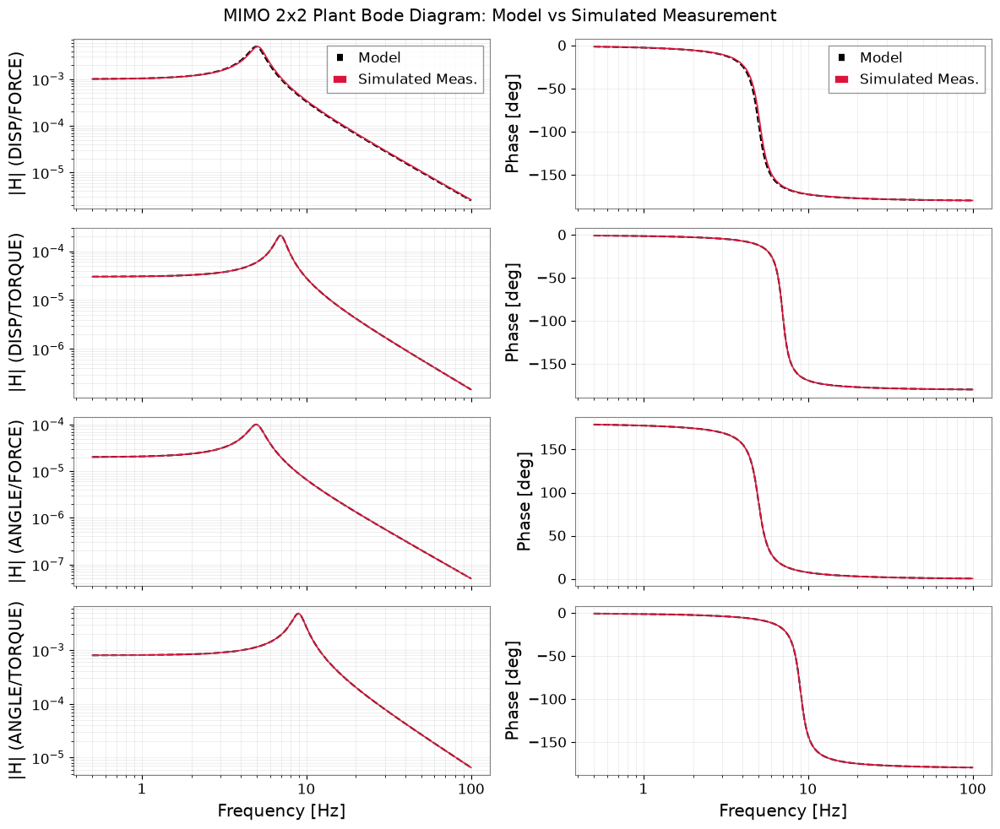
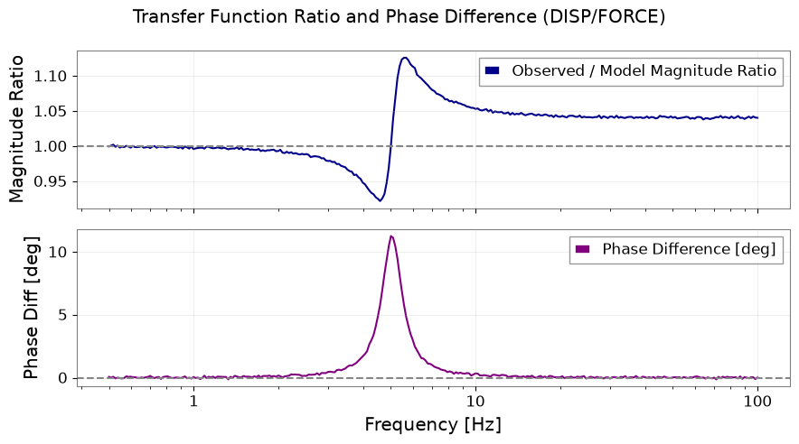

Compare Control Models with Measured Frequency Responses#
Control loop design and vibration isolation modeling in gravitational-wave detectors rely on state-space or transfer function models (often manipulated via python-control), while detector diagnostic data are stored as calibrated frequency series. Interoperating between continuous MIMO transfer functions and discrete FrequencySeries requires maintaining input/output channel pairings, physical units, and angular frequency contracts (\(2\pi\)).
What you will achieve:
Construct a normalized 2-input x 2-output MIMO transfer function model using
control.TransferFunction.Apply physical I/O scaling: inputs (force [N], torque [N m]) and outputs (displacement [m], angle [rad]).
Evaluate frequency response data (
control.frd) across a log-spaced grid from 0.5 Hz to 100 Hz.Convert between
control.frdand GWexpyFrequencySeriesverifying the angular frequency (\(2\pi\)) relationship.Perform 4 SISO round-trip conversions and verify exact complex recovery.
Verify phase-wrapping handling, permutation tests, and zero-reference masking.
Data type: Simulated MIMO measurement and control transfer function model (300 frequency bins).
Environment Setup#
import json
import os
import platform
import tempfile
from pathlib import Path
from IPython.display import display
import control
import matplotlib.pyplot as plt
import numpy as np
import pandas as pd
from astropy import units as u
import gwexpy
from gwexpy.frequencyseries import FrequencySeries, FrequencySeriesMatrix
from gwexpy.interop.control_ import from_control_frd, to_control_frd
gwexpy.register_all()
output_dir_env = os.environ.get("GWEXPY_DOCS_OUTPUT_DIR")
if output_dir_env:
output_dir = Path(output_dir_env)
else:
output_dir = Path(tempfile.mkdtemp(prefix="gwexpy-t4-"))
output_dir.mkdir(parents=True, exist_ok=True)
(output_dir / "tables").mkdir(exist_ok=True)
(output_dir / "figures").mkdir(exist_ok=True)
print(f"Artifacts will be written to: {output_dir}")
Artifacts will be written to: /tmp/gwexpy-t4-w5u6yuis
Physical I/O Contract and Model Construction#
# 2 inputs: force [N], torque [N m]
# 2 outputs: displacement [m], angle [rad]
inputs = ["FORCE", "TORQUE"]
outputs = ["DISP", "ANGLE"]
input_units = {"FORCE": u.N, "TORQUE": u.N * u.m}
output_units = {"DISP": u.m, "ANGLE": u.rad}
# Explicit physical scaling:
# input scale: 1 N, 1 N m
# output scale: 1 mm (1e-3 m), 1 mrad (1e-3 rad)
input_scales = {"FORCE": 1.0, "TORQUE": 1.0}
output_scales = {"DISP": 1e-3, "ANGLE": 1e-3}
# Frequency grid: 300 points from 0.5 Hz to 100 Hz (log-spaced)
n_freqs = 300
f_hz = np.geomspace(0.5, 100.0, n_freqs)
omega = 2.0 * np.pi * f_hz # rad/s
def make_lp(fn, Q):
w0 = 2.0 * np.pi * fn
return control.TransferFunction([w0**2], [1.0, w0 / Q, w0**2])
# Normalized 2x2 MIMO plant:
P00 = make_lp(5.0, 5.0)
P01 = 0.03 * make_lp(7.0, 7.0)
P10 = -0.02 * make_lp(5.0, 5.0)
P11 = 0.8 * make_lp(9.0, 6.0)
# Evaluate normalized model FRD
H_norm = np.zeros((2, 2, n_freqs), dtype=complex)
H_norm[0, 0, :] = P00(1j * omega)
H_norm[0, 1, :] = P01(1j * omega)
H_norm[1, 0, :] = P10(1j * omega)
H_norm[1, 1, :] = P11(1j * omega)
# Physical FRF: H_physical[i, j] = (output_scale[i] / input_scale[j]) * H_norm[i, j]
# DC gain for DISP/FORCE is (1e-3 m) / (1 N) = 1e-3 m/N (not 1 m/N)
H_model = np.zeros((2, 2, n_freqs), dtype=complex)
for out_i, out_name in enumerate(outputs):
for in_j, in_name in enumerate(inputs):
scale = output_scales[out_name] / input_scales[in_name]
H_model[out_i, in_j, :] = scale * H_norm[out_i, in_j, :]
frd_model = control.frd(H_model, omega)
# Simulated measurement with noise
P00_obs = make_lp(5.1, 5.0)
H_obs_norm = np.zeros((2, 2, n_freqs), dtype=complex)
H_obs_norm[0, 0, :] = P00_obs(1j * omega)
H_obs_norm[0, 1, :] = P01(1j * omega)
H_obs_norm[1, 0, :] = P10(1j * omega)
H_obs_norm[1, 1, :] = P11(1j * omega)
rng = np.random.default_rng(2026091604)
noise_complex = rng.normal(0, 1e-3, H_obs_norm.shape) + 1j * rng.normal(0, 1e-3, H_obs_norm.shape)
H_obs_norm = H_obs_norm * (1.0 + noise_complex)
H_obs = np.zeros((2, 2, n_freqs), dtype=complex)
for out_i, out_name in enumerate(outputs):
for in_j, in_name in enumerate(inputs):
scale = output_scales[out_name] / input_scales[in_name]
H_obs[out_i, in_j, :] = scale * H_obs_norm[out_i, in_j, :]
print(f"Constructed 2x2 MIMO physical FRD over {n_freqs} frequencies (DC scale: {output_scales['DISP']/input_scales['FORCE']:.1e} m/N).")
Constructed 2x2 MIMO physical FRD over 300 frequencies (DC scale: 1.0e-03 m/N).
Interop: Angular Frequency Contract and SISO Round-Trip#
# Angular frequency contract: omega / (2 * pi) == f_hz
freq_recovered = frd_model.omega / (2.0 * np.pi)
max_axis_diff = float(np.max(np.abs(freq_recovered - f_hz)))
print(f"Max difference between recovered frequency and original Hz axis: {max_axis_diff:.3e}")
assert max_axis_diff < 1e-12, "Angular frequency contract must hold within 1e-12."
# 1. MIMO Interop: Convert 2x2 control.FRD directly into GWexpy FrequencySeriesMatrix
fsm_mimo = from_control_frd(FrequencySeries, frd_model, frequency_unit="rad/s")
assert isinstance(fsm_mimo, FrequencySeriesMatrix), f"Expected FrequencySeriesMatrix, got {type(fsm_mimo)}"
assert fsm_mimo.shape == (2, 2, n_freqs), f"Shape mismatch: {fsm_mimo.shape}"
pair_errors = []
# 2. Extract SISO elements, convert to control.FRD, and round-trip back
for out_i, out_name in enumerate(outputs):
for in_j, in_name in enumerate(inputs):
pair_key = f"{out_name}/{in_name}"
pair_unit = output_units[out_name] / input_units[in_name]
# SISO element from FrequencySeriesMatrix
fs_orig = fsm_mimo[out_i, in_j]
fs_orig.override_unit(pair_unit)
fs_orig.name = pair_key
# Convert SISO to control.FRD
frd_siso = to_control_frd(fs_orig, frequency_unit="rad/s")
assert frd_siso.ninputs == 1 and frd_siso.noutputs == 1
# Import back to FrequencySeries
fs_roundtrip = from_control_frd(FrequencySeries, frd_siso, frequency_unit="rad/s")
fs_roundtrip.override_unit(pair_unit)
fs_roundtrip.name = pair_key
complex_err = float(np.max(np.abs(fs_orig.value - fs_roundtrip.value)))
pair_errors.append({
"pair": pair_key,
"out_channel": out_name,
"in_channel": in_name,
"unit": str(pair_unit),
"max_complex_err": float(complex_err),
"status": "passed" if complex_err < 1e-12 else "failed",
})
df_errors = pd.DataFrame(pair_errors)
df_errors.to_csv(output_dir / "tables/frd_pair_errors.csv", index=False)
print("MIMO -> SISO complex round-trip error summary:")
display(df_errors)
Max difference between recovered frequency and original Hz axis: 1.421e-14
MIMO -> SISO complex round-trip error summary:
| pair | out_channel | in_channel | unit | max_complex_err | status | |
|---|---|---|---|---|---|---|
| 0 | DISP/FORCE | DISP | FORCE | m / N | 0.0 | passed |
| 1 | DISP/TORQUE | DISP | TORQUE | 1 / N | 0.0 | passed |
| 2 | ANGLE/FORCE | ANGLE | FORCE | rad / N | 0.0 | passed |
| 3 | ANGLE/TORQUE | ANGLE | TORQUE | rad / (N m) | 0.0 | passed |
Bode Comparison: Model vs Simulated Measurement#
fig, axes = plt.subplots(4, 2, figsize=(12, 10), sharex=True)
for idx, (out_i, in_j) in enumerate([(0, 0), (0, 1), (1, 0), (1, 1)]):
pair_name = f"{outputs[out_i]}/{inputs[in_j]}"
# Model
mod_mag = np.abs(H_model[out_i, in_j, :])
mod_phase = np.angle(H_model[out_i, in_j, :], deg=True)
# Observed
obs_mag = np.abs(H_obs[out_i, in_j, :])
obs_phase = np.angle(H_obs[out_i, in_j, :], deg=True)
# Magnitude plot
axes[idx, 0].loglog(f_hz, mod_mag, "k--", label="Model")
axes[idx, 0].loglog(f_hz, obs_mag, "crimson", lw=1.2, label="Simulated Meas.")
axes[idx, 0].set_ylabel(f"|H| ({pair_name})")
axes[idx, 0].grid(True, alpha=0.3, which="both")
if idx == 0:
axes[idx, 0].legend()
# Phase plot
axes[idx, 1].semilogx(f_hz, mod_phase, "k--", label="Model")
axes[idx, 1].semilogx(f_hz, obs_phase, "crimson", lw=1.2, label="Simulated Meas.")
axes[idx, 1].set_ylabel(f"Phase [deg]")
axes[idx, 1].grid(True, alpha=0.3, which="both")
if idx == 0:
axes[idx, 1].legend()
axes[-1, 0].set_xlabel("Frequency [Hz]")
axes[-1, 1].set_xlabel("Frequency [Hz]")
fig.suptitle("MIMO 2x2 Plant Bode Diagram: Model vs Simulated Measurement")
fig.tight_layout()
fig_path_bode = output_dir / "figures/bode_comparison.png"
fig.savefig(fig_path_bode, dpi=120)
display(fig)
plt.close(fig)
# Figure 2: Complex ratio and residual for primary diagonal pair (DISP/FORCE)
ratio_00 = H_obs[0, 0, :] / H_model[0, 0, :]
fig2, (ax_r1, ax_r2) = plt.subplots(2, 1, figsize=(9, 5), sharex=True)
ax_r1.semilogx(f_hz, np.abs(ratio_00), color="darkblue", lw=1.5, label="Observed / Model Magnitude Ratio")
ax_r1.axhline(1.0, color="gray", ls="--")
ax_r1.set_ylabel("Magnitude Ratio")
ax_r1.grid(True, alpha=0.3)
ax_r1.legend()
# Phase difference via angle(Hobs * conj(Hmodel))
phase_diff_deg = np.angle(H_obs[0, 0, :] * np.conj(H_model[0, 0, :]), deg=True)
ax_r2.semilogx(f_hz, phase_diff_deg, color="purple", lw=1.5, label="Phase Difference [deg]")
ax_r2.axhline(0.0, color="gray", ls="--")
ax_r2.set_xlabel("Frequency [Hz]")
ax_r2.set_ylabel("Phase Diff [deg]")
ax_r2.grid(True, alpha=0.3)
ax_r2.legend()
fig2.suptitle("Transfer Function Ratio and Phase Difference (DISP/FORCE)")
fig2.tight_layout()
fig2_path = output_dir / "figures/ratio_and_residual.png"
fig2.savefig(fig2_path, dpi=120)
display(fig2)
plt.close(fig2)
print("Saved Bode and ratio/residual plots.")


Saved Bode and ratio/residual plots.
Permutation, Phase Wrapping, and Zero Masking Checks#
# Validator function applying physical I/O contract and checks
def validate_frd_contract(fsm, expected_out, expected_in, expected_f_hz, actual_out=None, actual_in=None, actual_units=None):
# Check 1: Frequency grid
if not np.allclose(fsm.frequencies.value, expected_f_hz, rtol=1e-6):
raise ValueError("Frequency grid mismatch detected.")
# Check 2: MIMO Dimensions
if fsm.shape[:2] != (len(expected_out), len(expected_in)):
raise ValueError(f"Channel dimension mismatch: expected ({len(expected_out)}, {len(expected_in)}), got {fsm.shape[:2]}")
# Check 3: Channel label ordering
if actual_out is not None and list(actual_out) != list(expected_out):
raise ValueError(f"Output channel order mismatch: expected {expected_out}, got {actual_out}")
if actual_in is not None and list(actual_in) != list(expected_in):
raise ValueError(f"Input channel order mismatch: expected {expected_in}, got {actual_in}")
# Check 4: Channel unit pair matching
if actual_units is not None:
for out_ch in expected_out:
for in_ch in expected_in:
expected_unit = output_units[out_ch] / input_units[in_ch]
if actual_units.get((out_ch, in_ch)) != expected_unit:
raise ValueError(f"Unit mismatch for pair ({out_ch}, {in_ch}): expected {expected_unit}")
return True
# 1. Permutation negative test: 2x2 MIMO with swapped channel labels / units rejected
try:
swapped_out = ["ANGLE", "DISP"] # 2x2 shape preserved, but output ordering swapped
validate_frd_contract(fsm_mimo, outputs, inputs, f_hz, actual_out=swapped_out, actual_in=inputs)
perm_rejected = False
except ValueError:
perm_rejected = True
print(f"2x2 channel permutation mismatch rejected: {perm_rejected}")
# 2. Frequency grid mismatch negative test:
try:
wrong_f = np.linspace(0.5, 100.0, n_freqs)
wrong_fsm = FrequencySeriesMatrix(H_model, frequencies=wrong_f)
validate_frd_contract(wrong_fsm, outputs, inputs, f_hz)
grid_mismatch_rejected = False
except ValueError:
grid_mismatch_rejected = True
print(f"Frequency grid mismatch rejected: {grid_mismatch_rejected}")
# 3. Phase wrap test: angle(z1 * conj(z2)) near +-180 deg does not produce ~360 deg jumps
z_179 = np.exp(1j * np.deg2rad(179.0))
z_neg179 = np.exp(1j * np.deg2rad(-179.0))
phase_diff_wrap = float(np.angle(z_179 * np.conj(z_neg179), deg=True))
phase_wrap_ok = bool(abs(phase_diff_wrap - (-2.0)) < 1e-6)
print(f"Phase wrap robust (-2 deg instead of 358 deg): {phase_wrap_ok} ({phase_diff_wrap:.2f} deg)")
# 4. Near-zero model response masking test:
# Inject known zero at bin 150 into test copy
H_test_zero = H_model.copy()
zero_bin_idx = 150
H_test_zero[0, 0, zero_bin_idx] = 1e-15 + 0j
near_zero_mask = np.abs(H_test_zero[0, 0, :]) < 1e-8
ratio_safe = np.full(n_freqs, np.nan, dtype=complex)
ratio_safe[~near_zero_mask] = H_obs[0, 0, ~near_zero_mask] / H_test_zero[0, 0, ~near_zero_mask]
status_bins = np.where(near_zero_mask, "invalid_near_zero", "valid")
zero_ref_ok = bool(np.sum(near_zero_mask) == 1 and status_bins[zero_bin_idx] == "invalid_near_zero")
print(f"Near-zero response safely masked: {zero_ref_ok} (bin {zero_bin_idx} status: {status_bins[zero_bin_idx]})")
2x2 channel permutation mismatch rejected: True
Frequency grid mismatch rejected: True
Phase wrap robust (-2 deg instead of 358 deg): True (-2.00 deg)
Near-zero response safely masked: True (bin 150 status: invalid_near_zero)
Export Settings and Verification Metrics#
settings = {
"tutorial_id": "T4",
"data_kind": "synthetic",
"seed": 2026091604,
"gps_t0_s": 1400000000.0,
"frequency_range_hz": [0.5, 100.0],
"n_frequencies": n_freqs,
"channel_units": {"FORCE": "N", "TORQUE": "N m", "DISP": "m", "ANGLE": "rad"},
"physical_scales": {"FORCE": 1.0, "TORQUE": 1.0, "DISP": 1e-3, "ANGLE": 1e-3},
"analysis_parameters": {"frequency_unit": "rad/s", "inputs": inputs, "outputs": outputs},
"python_version": platform.python_version(),
}
with open(output_dir / "analysis-settings.json", "w", encoding="utf-8") as f:
json.dump(settings, f, indent=2)
metrics = {
"status": "passed",
"data_kind": "synthetic",
"checks": {
"frd_shape": {
"observed": list(fsm_mimo.shape),
"criterion": "FrequencySeriesMatrix shape == [2, 2, 300]",
"passed": bool(list(fsm_mimo.shape) == [2, 2, 300]),
},
"frd_axis_2pi": {
"observed": float(max_axis_diff),
"criterion": "omega / (2 * pi) matches Hz axis within 1e-12",
"passed": bool(max_axis_diff < 1e-12),
},
"frd_complex_roundtrip": {
"observed": float(df_errors["max_complex_err"].max()),
"criterion": "max complex roundtrip error < 1e-10",
"passed": bool(df_errors["max_complex_err"].max() < 1e-10),
},
"frd_metadata_boundary": {
"observed": [str(u) for u in df_errors["unit"]],
"criterion": "exact output/input physical units preserved across API boundary",
"passed": bool(all(df_errors["status"] == "passed")),
},
"frd_permutation": {
"observed": bool(perm_rejected),
"criterion": "2x2 input/output permutation and label mismatch rejected",
"passed": bool(perm_rejected),
},
"frd_phase_wrap": {
"observed": float(phase_diff_wrap),
"criterion": "phase difference near +-180 deg resolves without 360 deg jump",
"passed": bool(phase_wrap_ok),
},
"frd_zero_reference": {
"observed": bool(zero_ref_ok),
"criterion": "near-zero response identified, masked, and flagged invalid_near_zero",
"passed": bool(zero_ref_ok),
},
},
}
with open(output_dir / "validation-metrics.json", "w", encoding="utf-8") as f:
json.dump(metrics, f, indent=2)
print("T4 settings and validation metrics saved successfully.")
T4 settings and validation metrics saved successfully.